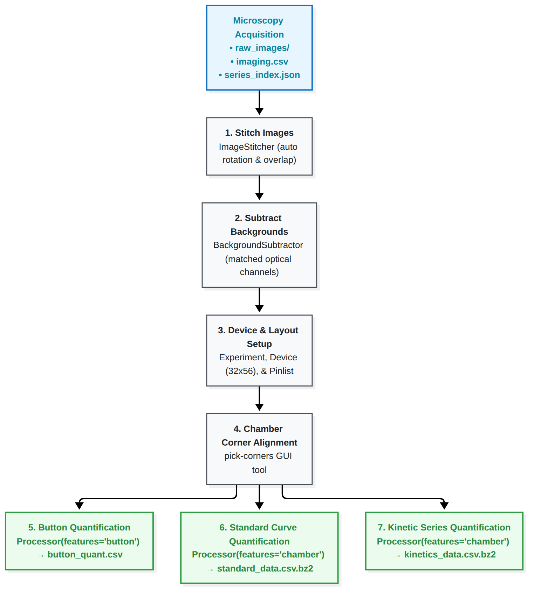

Image Processing & Quantification Walkthrough
This guide provides a comprehensive walkthrough for converting raw, tiled microscopy images from high-throughput microfluidic experiments (HT-BAM / HT-MEK) into the calibrated fluorescence tables used for downstream kinetic analysis, based on htbam_notebooks/process.ipynb.
Overview of the Image Processing Pipeline

1. Directory Structure & Required Metadata
The processing workflow expects an acquisition folder organized according to the standard automated microscopy protocol:
experiment_root/
├── imaging.csv # Master acquisition metadata (rasters, exposures, channels)
├── raw_images/ # Subfolders for each acquisition raster
│ ├── 2026-05-10_00-13-33_kinetic_series_MM_Kinetics/
│ │ ├── series_index.json # Series coordinate index and timing
│ │ └── tile_001.tif, tile_002.tif, ...
│ └── ...
└── pinlists/ # (Optional) Device chamber-to-sample mapping files
└── device_pinlist.csv
2. Image Stitching (ImageStitcher)
Raw microscope images are acquired as overlapping 2D tiles. ImageStitcher orchestrates raster stitching, automatic rotation correction, and overlap alignment:
from pathlib import Path
from mercury.stitching import ImageStitcher
root = Path('/path/to/experiment_root')
stitcher = ImageStitcher(root)
(Optional) Testing Rotation Angles
Microscope camera orientation may be slightly offset from the chip axis. You can evaluate candidate rotation angles on a reference image:
stitcher.test_stitching_rotations(
raster_path=root / 'raw_images/2026-05-09_16-58-08_pre_button_quant_brightfield',
rotations=[1.0, 1.2, 1.4, 1.6, 1.8, 2.0],
acqui_origin=(True, False),
outdir=root / 'stitch_test'
)
Running Stitching
Stitch the entire experiment dataset:
stitcher.stitch_images(
rotation=None, # None enables automatic rotation optimization
get_rotation_from='*brightfield*', # Brightfield channels provide the best features for rotation
acqui_origin=(True, False) # Microscope stage origin orientation
)
Stitched full-device images are written to root / 'stitched_images'.
3. Background Subtraction (BackgroundSubtractor)
Autofluorescence, illumination gradients, and optical noise must be subtracted by pairing assay images with channel-matched dark images:
from mercury.stitching import BackgroundSubtractor
# Specify paths to reference background images for each channel:
background_images = [
root / 'stitched_images/cyan_button_quant_background.tif',
root / 'stitched_images/green_mscarlet_background.tif',
root / 'stitched_images/UV340_nadh_background.tif',
]
subtractor = BackgroundSubtractor(root)
subtractor.background_subtract_images(
background_images=background_images,
grouping_keys=['channel', 'exposure'] # Match raw images to backgrounds by optical configuration
)
Corrected images are written to root / 'bg_subtracted_images'.
4. Initializing Experiment & Device Geometry
Register physical microfluidic devices and pinlist metadata:
from mercury.processing.experiment import Experiment, Device, DataHandler
experiment = Experiment(root)
# Define chip grid geometry (e.g. 32 rows x 56 columns = 1,792 chambers)
d1 = Device(
setup='s1',
dname='d3', # Must match device name recorded during acquisition
dims=(32, 56),
pinlist_path='pinlists/chip_pinlist.csv'
)
experiment.register_device(d1)
data_handler = DataHandler(experiment)
# Print discovered image series identifiers
data_handler.list_identifiers()
5. Chamber Alignment & Corner Picking (pick-corners)
To locate reaction chambers on the stitched overview images, physical chip corners are defined using the interactive GUI utility:
pick-corners --image stitched_images/reference_brightfield.tif --output corners.json
In the interactive window: 1. Zoom in and click the center of the top-left, top-right, bottom-left, and bottom-right microfluidic fiducial chambers. 2. The coordinate transformation maps the rectangular chip model onto physical image pixels.
6. Feature Extraction & Quantification
With corners defined, use Processor to extract intensities for protein loading, standard curves, and kinetic series.
A. Button Quantification (Protein Expression)
Extract fluorescence at antibody/bait spots under the button valves:
from mercury.processing import Processor
button_images = data_handler.get_images(identifiers=['button_quant_run_id'])
# Measure button ROIs
button_processor = Processor(experiment, image_data=button_images, features='button')
button_processor.set_corners(corners_file='corners.json')
button_df = button_processor.process(use_reference=False)
button_df.to_csv(root / 'button_quant.csv', index=False)
B. Product Standard Curves
Extract fluorescence across calibrated product concentrations:
standard_images = data_handler.get_images(identifiers='standard_curve_run_id')
standard_processor = Processor(experiment, image_data=standard_images, features='chamber')
standard_processor.set_corners(corners_file='corners.json')
standard_df = standard_processor.process(use_reference=False)
standard_df.to_csv(root / 'standard_data.csv.bz2', compression='bz2')
C. Kinetic Reaction Series
Extract reaction progress time-series across substrate concentrations:
import pandas as pd
kinetics_images = data_handler.get_images(identifiers='kinetics_series_run_id')
kinetics_processor = Processor(experiment, image_data=kinetics_images, features='chamber')
kinetics_processor.set_corners(corners_file='corners.json')
kinetics_df = kinetics_processor.process(use_reference=False)
# If multiple kinetic sets were collected, concatenate them:
# kinetics_merged = pd.concat([kinetics_df_1, kinetics_df_2], ignore_index=True)
kinetics_df.to_csv(root / 'kinetics_data.csv.bz2', compression='bz2')
Transition to Downstream Analysis
Once button_quant.csv, standard_data.csv.bz2, and kinetics_data.csv.bz2 are generated in your experiment directory, proceed to the Michaelis–Menten Analysis Guide to fit reaction velocities, apply quality filters, and derive catalytic constants.